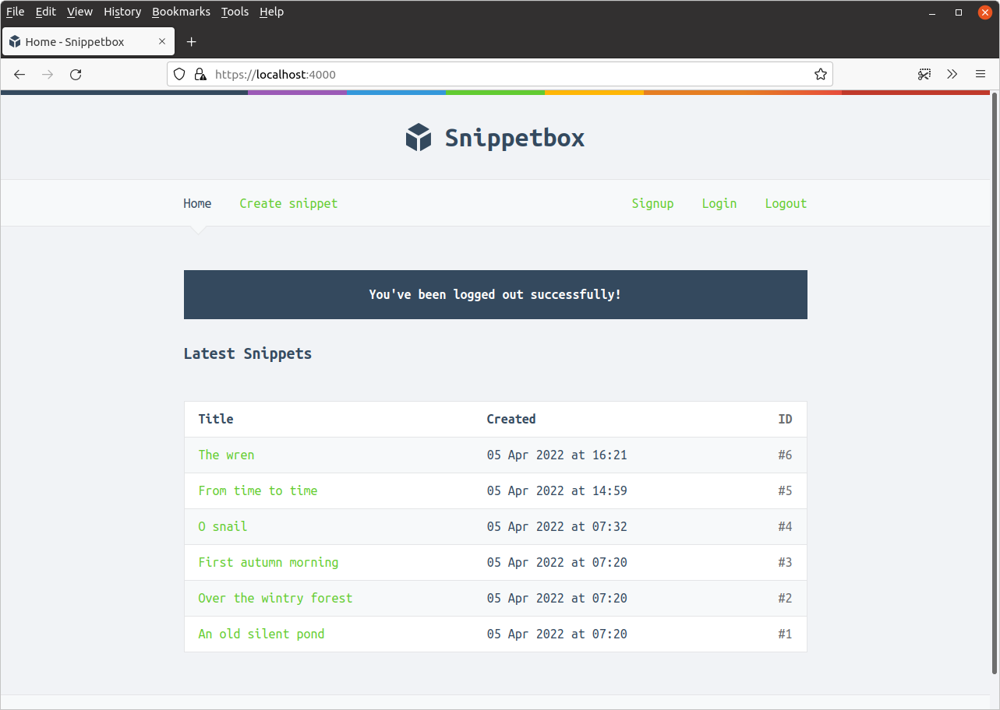

فصل ۱۰.۵.
خروج کاربر
این ما را به خوبی به خروج کاربر میرساند. پیادهسازی خروج کاربر در مقایسه با ثبتنام و ورود به سیستم سادهتر است — اساساً تنها کاری که باید انجام دهیم حذف مقدار "authenticatedUserID" از جلسه کاربر است.
در عین حال، بهتر است شناسه جلسه را دوباره تجدید کنیم و همچنین یک پیام فلش به دادههای جلسه اضافه کنیم تا به کاربر تأیید کنیم که از سیستم خارج شده است.
بیایید handler userLogoutPost را بهروزرسانی کنیم تا دقیقاً این کار را انجام دهد.
package main ... func (app *application) userLogoutPost(w http.ResponseWriter, r *http.Request) { // Use the RenewToken() method on the current session to change the session // ID again. err := app.sessionManager.RenewToken(r.Context()) if err != nil { app.serverError(w, r, err) return } // Remove the authenticatedUserID from the session data so that the user is // 'logged out'. app.sessionManager.Remove(r.Context(), "authenticatedUserID") // Add a flash message to the session to confirm to the user that they've been // logged out. app.sessionManager.Put(r.Context(), "flash", "You've been logged out successfully!") // Redirect the user to the application home page. http.Redirect(w, r, "/", http.StatusSeeOther) }
فایل را ذخیره کنید و برنامه را مجدداً راهاندازی کنید. اگر اکنون روی لینک ‘خروج’ در نوار ناوبری کلیک کنید، باید از سیستم خارج شده و به صفحه اصلی هدایت شوید، به این صورت:
